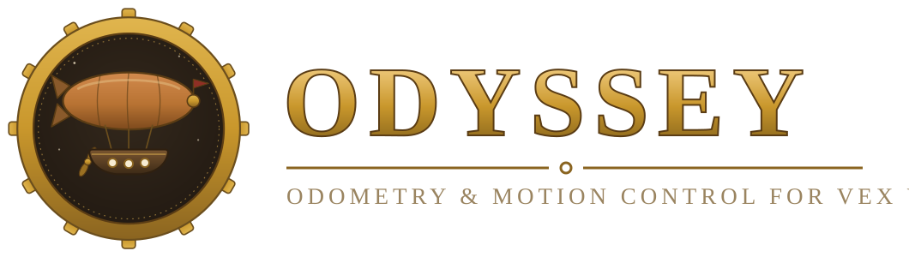
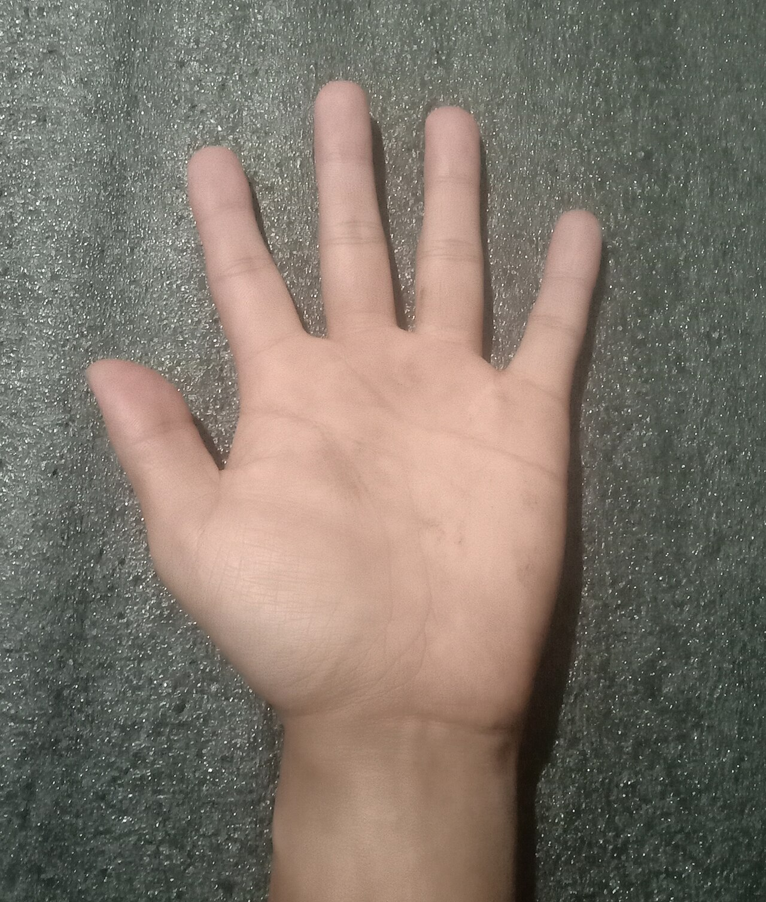

Featured robotics build · joint control
IRIS
My traditional articulated robot arm, built to coordinate its joints for reaching, positioning, and physical manipulation.
Traditional arm · physical controlRobotics · systems engineering · software
From sensor input to controlled motion—position tracking, computer vision, physical machines, and the interfaces that make them usable.
The through-line
I turn real-world input into intentional motion—across robots, vision systems, simulations, and interfaces built to make complex behavior feel clear.
IRIS is the central robotics build: a traditional articulated arm. Odyssey and Handwave carry the same control thinking into autonomous motion and human input.
Featured robotics build · joint control
My traditional articulated robot arm, built to coordinate its joints for reaching, positioning, and physical manipulation.
Traditional arm · physical control
VEX V5 · C++ · PROS
Position-aware autonomous motion for a VEX robot.
View repository ↗
MediaPipe · Python
Pinches and swipes become Mac cursor controls.
View repository ↗Choose a route
The same systems instinct travels from low-level control to interfaces and simulation.
Track position, plan a path, correct error, and expose the controls clearly enough to tune.
Read Odyssey docsFrameSight watches a Windows display, runs YOLO detection in real time, and draws what it finds in a transparent click-through overlay.
Open FrameSightVEXVortex keeps competition information and robot analysis together, so the useful details are easier to reach between matches.
VEXVortexOdyssey Simulator lets me write autonomous routines, watch them run on a virtual VEX field, and copy the generated C++ back to the robot.
Open Odyssey SimulatorThe project network
Each card explains what the project actually does and uses real repository media whenever the project provides it.
Behind the systems
I’m Jonah, a high school student pursuing robotics and systems engineering. I’m the main coder for VEX V5 team 56S and its primary CAD designer.
I’m most interested in the seam between software and the physical world: position tracking, perception, motion planning, and the tools that make those systems easier for other people to understand and use.
See how I build on GitHub ↗Next destination
For engineering opportunities, collaboration, or questions about the work, the route starts here.